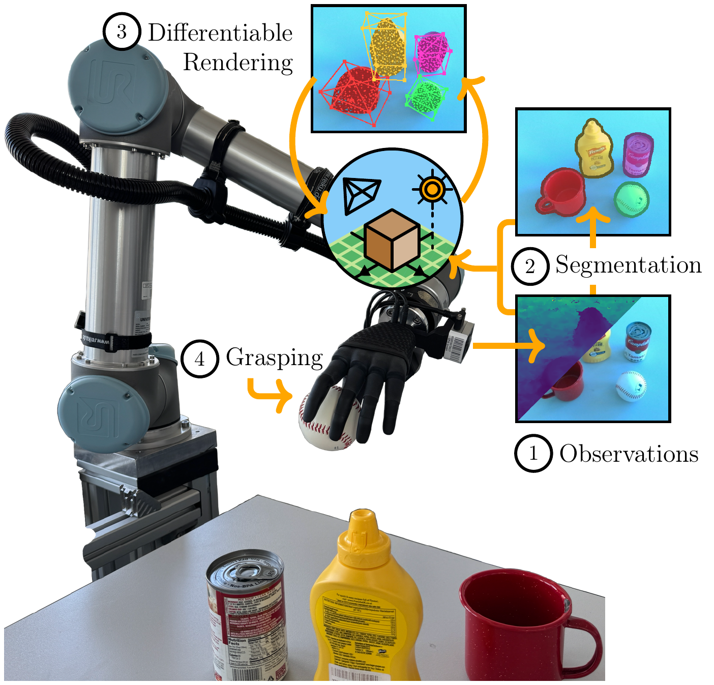
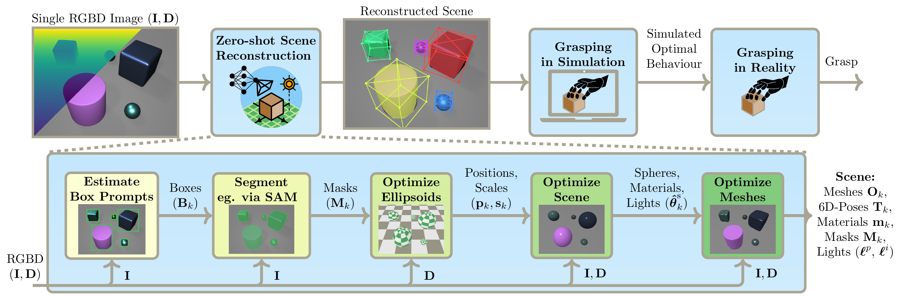
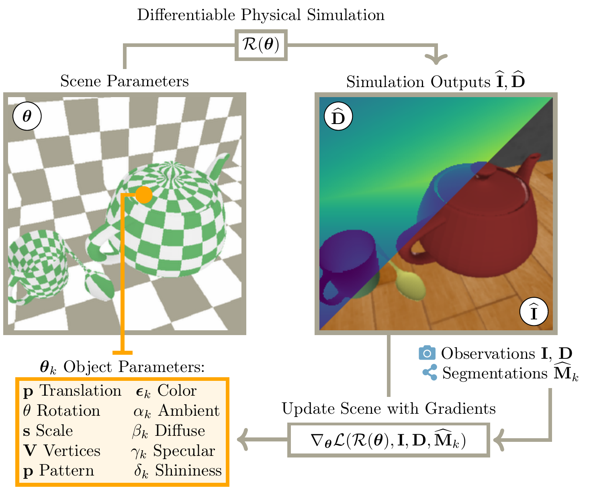
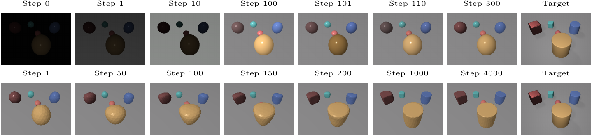
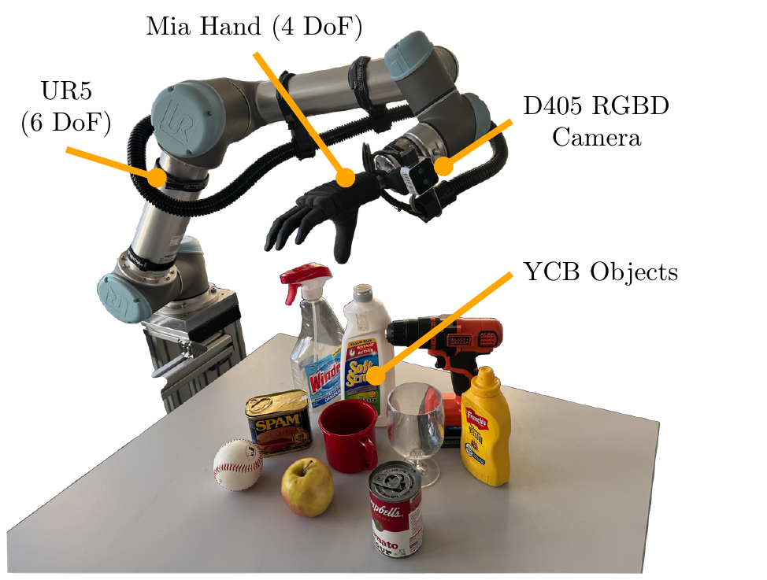

Differentiable Inverse Graphics for Zero-shot Scene Reconstruction and Robot GraspingDFKI Robotics Innovation Center, University of Bremen, Robotics Institute Germany |
 |
|
TL;DR: We use physics-based optimization to reconstruct scenes and grasp unseen objects zero-shot from a single RGBD image, with no 3D training data. |
Abstract |
|
Operating effectively in novel real-world environments requires robotic systems to estimate and interact with previously unseen objects. Current state-of-the-art models address this challenge by using large amounts of training data and test-time samples to build black-box scene representations. In this work, we introduce a differentiable neuro-graphics model that combines neural foundation models with physics-based differentiable rendering to perform zero-shot scene reconstruction and robot grasping without relying on any additional 3D data or test-time samples. Our model solves a series of constrained optimization problems to estimate physically consistent scene parameters, such as meshes, lighting conditions, material properties, and 6D poses of previously unseen objects from a single RGBD image and bounding boxes. We evaluated our approach on standard model-free few-shot benchmarks and demonstrated that it outperforms existing algorithms for model-free few-shot pose estimation. Furthermore, we validated the accuracy of our scene reconstructions by applying our algorithm to a zero-shot grasping task. By enabling zero-shot, physically-consistent scene reconstruction and grasping without reliance on extensive datasets or test-time sampling, our approach offers a pathway towards more data efficient, interpretable and generalizable robot autonomy in novel environments. |
Global Pipeline |
|
 From a single RGBD image and bounding box prompts, our model uses a segmentation model to estimate the object masks. It then initializes a 3D scene by performing a robust probabilistic estimation of object shapes using ellipsoidal primitives. Subsequently, it optimizes the shapes, poses, materials, and lighting conditions with physics-based differentiable rendering by matching rendered views to the real observation. A final mesh optimization stage refines the mesh vertices through a cage-based deformation model. Finally, the reconstructed scene is used in simulation to find an optimal grasp, which is then performed in reality using the robotic system The resulting scene representation includes meshes, poses, materials, masks, and lighting conditions. |
Differentiable Rendering |
|
 |
The renderer compares rendered RGBD observations against the real input and provides gradients for optimizing scene parameters. This is the core mechanism that turns the reconstruction problem into an explicit inverse optimization problem rather than a black-box prediction.
|
Inverse Optimization |
|
The reconstruction is solved as a sequential optimization pipeline. The first stage (top-row) optimizes simple spherical object representations together with lighting, materials, and object layout so that the rendered scene matches the observed RGBD image. The second stage (bottom-row) replaces those simple shapes with triangular meshes and refines their geometry through a cage-based deformation model using mean value coordinates. This lets the system preserve the scene structure found in the first stage while optimizing more detailed object shapes that better explain the observation.  |
Results |
|
The qualitative results evaluate FewSOL, CLEVR-POSE, MOPED, and LINEMOD-OCCLUDED, demonstrating zero-shot generalization to previously unseen objects. Despite changes in shape, texture, material, clutter, and occlusion, the method recovers consistent object pose and geometry across these datasets. 
|
Videos |
|
|
Robot Grasping |
|
 |
The reconstructed scene is used to evaluate candidate grasps in simulation and then execute the best grasp on the robot with the UR5 arm, Mia hand, and D405 camera.
|
BibTeX
@misc{arriaga2026differentiable,
title={Differentiable Inverse Graphics for Zero-shot Scene Reconstruction and Robot Grasping},
author={Arriaga, Octavio and Sharma, Proneet and Guo, Jichen and Otto, Marc and Kadwe, Siddhant and Adam, Rebecca},
year={2026},
eprint={2602.05029},
archivePrefix={arXiv},
primaryClass={cs.RO},
doi={10.48550/arXiv.2602.05029},
url={https://arxiv.org/abs/2602.05029}
}
|